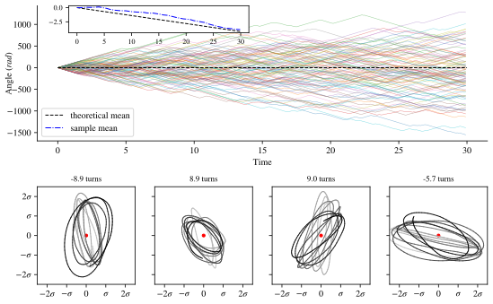
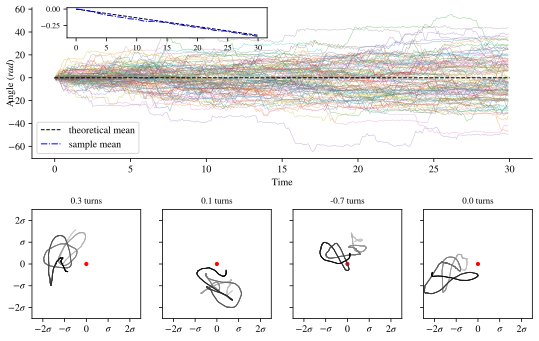

Can a magnetic field 20 times weaker than a fridge magnet really steer atoms inside your body? Conventional physics says no. Our work says: yes, if the cell is alive.
For decades, experiments have reported that weak, static magnetic fields, on the scale of the Earth's own field ($\sim 50\,\mu\text{T}$), can influence biological processes. These reports span cell growth, enzyme activity, and neural signaling. Yet the findings are controversial, in part because no one could explain how such a feeble field could do anything meaningful inside a cell.
The problem is twofold. First, cellular ions like $\text{Na}^+$, $\text{K}^+$, and $\text{Ca}^{2+}$ live in a warm, soupy environment at $37^\circ\text{C}$, where thermal jostling overwhelms any gentle magnetic nudge. Second, the viscous drag on an ion in water is staggering: the ratio of the Lorentz force (from the magnetic field) to the friction force is roughly $10^{-10}$. Put simply, asking a weak magnetic field to steer an ion through cytoplasm is like asking a breeze to redirect a bowling ball rolling through honey.
Classical statistical mechanics (the Bohr–van Leeuwen theorem) proves that a static magnetic field has zero effect on any system in thermal equilibrium. So if the field does anything at all, the system must be out of equilibrium.
This is exactly where biology helps physics. A living cell is not an equilibrium system. Proteins flex, side-chains rotate, and methyl groups vibrate, all driven by metabolic energy, creating a background hum of fast, random forces that has nothing to do with the thermal bath.
We modeled a single ion (say $\text{Ca}^{2+}$) confined inside a protein cavity, subject to three forces: the usual thermal friction-and-noise from the surrounding water, a confining potential from the protein, and a weak additional white noise from these fast, non-thermal protein motions. This extra noise is small (just $\sim 1\%$ of the thermal noise intensity), but it breaks the fluctuation-dissipation relation (FDR), which is the mathematical backbone of equilibrium. Once FDR is broken, the Bohr–van Leeuwen theorem no longer applies, and the door opens for a magnetic field response.
What we found is striking. In this non-equilibrium steady state, a static magnetic field induces a net cyclotron rotation of the ion: a slow, circular orbit whose angular velocity matches the cyclotron frequency $b = QB/m$. For $\text{Ca}^{2+}$ in a $1\,\text{mT}$ field, that's about 5,000 rotations per second, corresponding to a period on the order of milliseconds, exactly the timescale of many protein functional motions.

The crucial enabler is memory in the friction. Water molecules and the ion have comparable masses, so the friction kernel retains memory of past velocities (with a characteristic time $\sim 10^{-10}$ s). This memory promotes underdamping: the ion can complete coherent rotations before the trajectory randomizes. A weak magnetic field then biases these rotations in one direction, producing a net cyclotron motion on longer timescales.

The cyclotron period ($\sim\text{ms}$) coincides with the functional timescale of many metalloproteins. For instance, $\text{Ca}^{2+}$ binding to calmodulin, a regulatory protein involved in muscle contraction, memory, and inflammation, occurs on this timescale. The induced rotational symmetry could subtly reshape how ions dock into binding cavities, offering a concrete route from magnetic field to biological function.
This mechanism also offers a natural explanation for the notorious irreproducibility of magnetobiology experiments: the effect depends on non-equilibrium conditions that can vary between preparations, cell types, and environmental conditions. The fragility is a feature, not a bug: it is a signature of life's distance from equilibrium.
A weak magnetic field cannot influence a dead, equilibrium system (Bohr–van Leeuwen). But a living cell, with its non-equilibrium noise, friction memory, and tight ion confinement, can sustain cyclotron rotation at biologically relevant timescales.